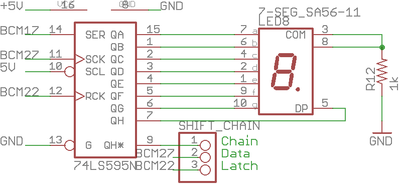

Lab 4:
<<<<<<< HEAD
Using a shift register
Information
In the last lab, you used the Raspberry Pi's General Purpose Input/Output pins for both input and output. For input, your code checked to see if any of 4 buttons were pressed. For output, your code turned on up to 8 LEDs. Each of these buttons and LEDs are connected to an individual GPIO pin. However, direct connections like this are actually an inefficient method of connecting devices to the Pi. Why? Look at this pin diagram from
pinout.xyz:

Some of these pins have special functions that others do not have:
- UART
- Universal Asynchronous Receiver/Transmitter. The old school way of communicating to other devices. With the right adapter, it can connect to RS-232 devices that can either access the PI's console or allow the PI to access the console of, say, a Cisco switch.
- BCM 14 is the UART Tx line
- BCM 15 is the UART Rx line
- I²C
- Inter-Intergrated Circuit, which is supposed to be written as I²C, but is often written as I2C since super scripts are too hard. The abbrivation is actually pronounced as "I-squared-C" so don't call it "I-two-C" if you don't want to be made fun of behind your back! The PI has two I²C channels 0 and 1.
- BCM 2 is the Serial Data line (SDA) for channel 1
- BCM 3 is the Serial Clock line (SCL) for channel 1
- BCM 0 is the Serial Data line (SDA) for channel 0
- BCM 1 is the Serial Clock line (SCL) for channel 0
- Note: The HAT breaks out the I²C channel 1 lines, but the channel 0 lines are connected to the EEPROM chip below the buttons, next to the camera slot.
- SPI
- Serial Peripheral Interface. The PI has two SPI channels 0 and 1, but you have to chose your own chip select pin for channel 1.
- BCM 10 is the Master Out Slave In (MOSI) line for channel 0
- BCM 9 is the Master In Slave Out (MISO) line for channel 0
- BCM 10 is the Serial Clock (SCLK) line for channel 0
- BCM 8 is the Chip Enable 0 (CE0) line for channel 0
- BCM 7 is the Chip Enable 1 (CE1) line for channel 0
- BCM 20 is the Master Out Slave In (MOSI) line for channel 1
- BCM 19 is the Master In Slave Out (MISO) line for channel 1
- BCM 21 is the Serial Clock (SCLK) line for channel 1
- Note: Can use another GPIO pin as another Chip Enable pin, but your code has to be written a little differently.
- Note: The HAT only breaks out the channel 0 pins. Channel 1 MOSI is used for Switch 2, Channel 1 SCLK is used for Switch 3, and Channel 1 MISO is used for LED2.
- 1-Wire
- The 1-Wire interface uses 1 wire for communication, if that wasn't obvious.
- BCM 4 is the Data line.
The HAT was designed to breakout these special connections so that
someone (hint, hint) could more easily use them to extend the functionality of the HAT and build a neat project. These special lines can also be used as normal GPIO pins, but access to that special feature is lost. Because we're saving those pins for their special use, there aren't a lot of options to add more functionality to the HAT. So, how many pins do we still have to work with? We know that the PI 2 (and newer) has 40 pins. Let's count the specialized pins, pins for the LEDs, pins for the buttons, pins for power and ground:
- 8 LEDs
- 4 Buttons
- 2 UART lines
- 4 I²C lines (2 channels)
- 5 SPI lines (channel 0 only, remember that the channel 1 pins were used for buttons or LEDs)
- 1 1-Wire line
- 2 5 volt power lines
- 2 3.3 volt power lines
- 8 Ground lines
So, do some fifth grade math and figure out how many pins are left. Alright, fine,
I'll do it for you: there are 4 pins available.
Now, look at your HAT. Look at the 7 segment display. How many LEDs in the display are there? 8: the 7 segments of the digit and the decimal point. We only have 4 pins to drive 8 LEDs. How would we accomplish this? We use a shift register!
What's a shift register?
It is a register that you shift bits into!
Alright, fine a more detailed explanation: a shift register is an integrated circuit that allows a microcontroller or other device to expand input or output by reading or writing data in serial. They outputting data one bit at a time, storing it in a register, and shifting the values in the register over.
The HAT uses a
74HC595N shift register, the black package next to the seven segment display. It requires at least 3 lines to drive:
data,
clock, and
latch. There are an optional 2 lines that can be used:
output enable and
clear register. If these aren't used, tie
output enable to ground and
clear register to 5v. It can be daisy chained to more shift registers, allowing for an arbitrary number of extra pins. The HAT doesn't use the two optional lines, since we only have 4 pins available and it would be more complicated to program. Review the schematic for the 7 segment display functional area of the HAT:

Instructions
=======
Using a shift register
There isn't anything interesting here yet...
Information
Instructions
>>>>>>> 46844fe660f808282b350d18ebdd0490178c4408
Resources
Download these files to your Raspberry Pi: